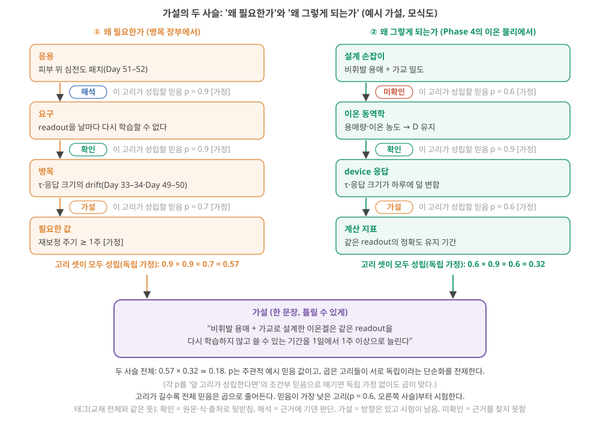
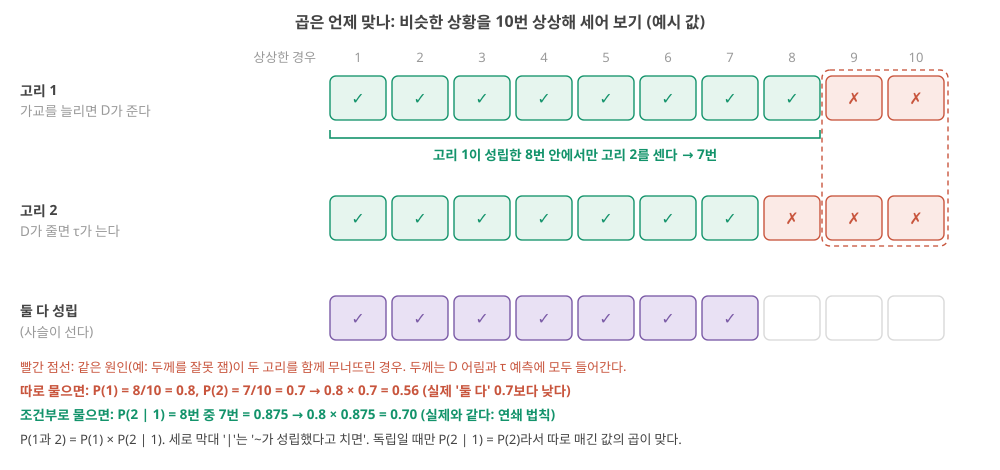
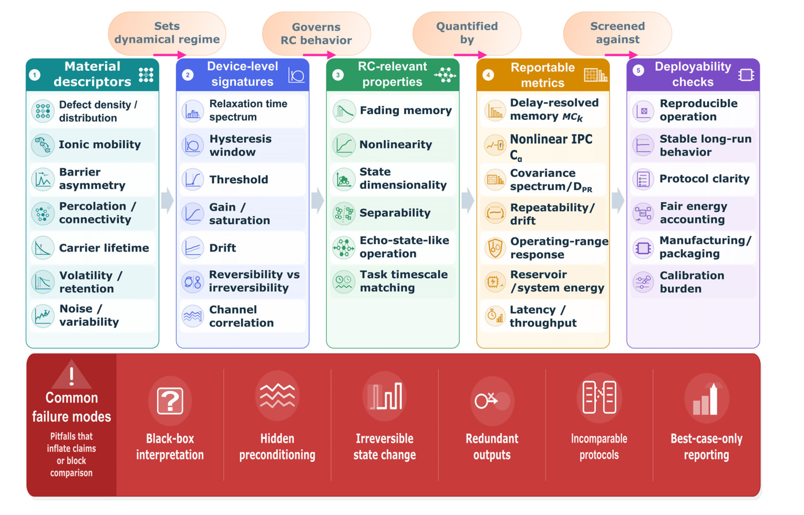
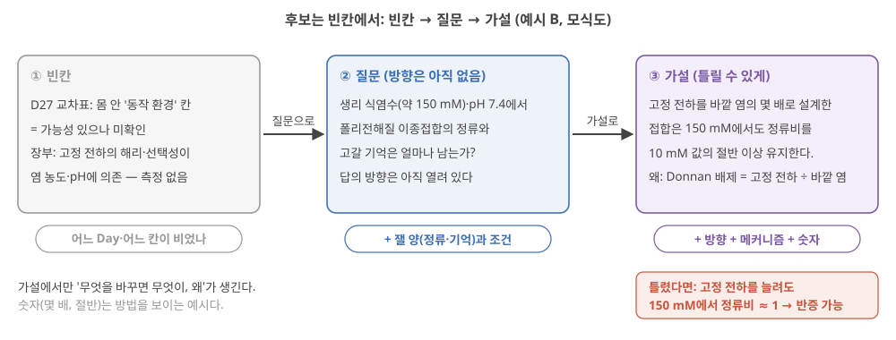

Day 47. 가장 중요한 가설
Phase 5 · 나는 무엇을 연구해야 하는가
이번 질문 — 내가 고분자 설계로 검증할 수 있는 가장 중요한 가설은 무엇인가?
사전 테스트 (선택)
사전 테스트 펼치기 · 배우기 전에 짐작해 보는 문제 (선택)
학습자료
Phase 5의 넷째 날입니다. Day 41–42에서 이 분야가 무엇을 입증했고 무엇이 비어 있는지, Day 43–44에서 실용화를 막는 병목이 무엇인지, Day 45–46에서 고분자 이온 소재가 경쟁할 수 있을지 모르는 자리가 어디인지 봤습니다. 이제 질문이 처음으로 나를 향합니다. 내가 고분자 설계로 검증할 수 있는 가장 중요한 가설은 무엇인가?
오늘 자료는 이 질문의 답을 주지 않습니다. 답은 내 소재, 내 장비, 내 관심으로만 정할 수 있고, 그것은 내 답 양식에서 내가 씁니다. 오늘 자료가 주는 것은 답을 고르는 방법과 판단 기준입니다. 가설이 무엇이고, 좋은 가설에는 어떤 사슬이 붙어야 하며, 후보를 어디서 꺼내 어떤 체로 거르고, 어떤 함정을 피해 하나를 고르는가. 예시로 드는 후보 다섯 개(A–E)는 그 방법을 보이기 위한 재료입니다. 그중 하나는 사용자의 연구 맥락(폴리전해질 이종접합, 이온 다이오드, 고갈층)에 가깝게 골랐지만, 그것도 예시일 뿐입니다.
- 가설은 관찰·주제·목표와 무엇이 다른가? "틀릴 수 있다"는 것이 왜 장점인가?
- 좋은 가설에 붙어야 하는 두 사슬, "왜 필요한가"와 "왜 그렇게 되는가"는 무엇인가? 사슬의 가장 약한 고리는 어떻게 찾나?
- 후보는 어디서 꺼내나? Day 35–46의 빈칸을 가설로 바꾸는 절차는?
- 후보를 어떤 체로 거르나? 관문과 점수는 왜 따로 봐야 하나?
- 흔한 함정(반증할 수 없는 문장, 시연을 가설로 착각, 교란변수, 크기에 묻히는 손잡이)은 무엇이고 어떻게 피하나?
- 그래서 "가장 중요한" 하나는 어떻게 고르나?
1. 가설이란 무엇인가: 관찰·주제·목표·가설·예측
이 구간을 읽고 나면 관찰·연구 주제·목표·가설·예측을 예문으로 구별하고, 한 문장짜리 가설이 "틀렸다면 무엇이 관측될지"를 말할 수 있는지(반증 가능성) 판정할 수 있다.
왜 필요한가. Day 49–50에는 "이 연구를 한다 / 좁혀서 한다 / 접는다"를 결정합니다. 그런데 "이온 고분자로 뉴로모픽 소자를 연구한다"는 문장으로는 아무것도 결정할 수 없습니다. 어떤 실험 결과가 나와도 그 문장은 그대로 서 있기 때문입니다. 결정을 하려면 실험 결과에 따라 참과 거짓이 갈리는 문장이 있어야 합니다. 그것이 가설입니다.
가설·예측·반증 가능성: 결과에 따라 운명이 갈리는 문장
다섯 가지 문장. 연구 계획서에 흔히 섞여 나오는 문장을 종류별로 나눠 봅니다. 예문은 모두 이 교재가 만든 것입니다.
| 종류 | 예문 | 무엇인가 | 실험으로 틀릴 수 있나 |
|---|---|---|---|
| 관찰 | "우리 이온겔의 이온전도도는 1 mS/cm다." | 이미 잰 사실 | 다시 재면 확인될 뿐 |
| 연구 주제 | "이온 고분자로 뉴로모픽 소자를 연구한다." | 관심 영역 | 아니요 |
| 목표(시연) | "MNIST 정확도 95%를 달성한다." | 이루고 싶은 숫자 | 달성/미달은 갈리지만, 왜 그런지는 말하지 않는다 |
| 가설 | "가교제를 늘리면 사슬 운동성이 줄어 이온 확산계수 \(D\)가 줄고, 그래서 이완 시간 τ가 길어진다." | 원인 → 메커니즘 → 결과의 주장 | 예 |
| 예측 | "두께를 같게 두고 가교제를 1 → 5 mol%로 늘리면, \(D\)가 절반이 될 때 τ는 약 2배가 된다." | 가설이 참이면 특정 측정에서 나올 숫자 | 예, 숫자로 |
가설(hypothesis)은 "무엇을 바꾸면 무엇이, 왜 바뀌는가"를 한 문장으로 주장하는 것입니다. 원인(가교제), 메커니즘(사슬 운동성 → \(D\)), 결과(τ)가 다 들어 있습니다. 예측(prediction)은 그 가설이 참이라면 어떤 실험에서 어떤 숫자가 나와야 하는지를 적은 것입니다. 가설은 직접 잴 수 없는 메커니즘을 품고 있지만, 예측은 잴 수 있습니다.
반증 가능성(falsifiability)은 "이 가설이 틀렸다면 무엇이 관측될지 미리 말할 수 있는가"입니다. 위 예에서는 "\(D\)가 절반이 되었는데도 τ가 측정 오차 안에서 그대로"가 관측되면 가설이 틀렸습니다. 이 말을 할 수 있으면 반증 가능한 가설이고, 할 수 없으면 아무리 그럴듯해도 검증할 수 없는 문장입니다. 이 기준은 과학철학자 칼 포퍼가 『과학적 발견의 논리』(독일어판 1934, 판권면 표기 1935 / 영어판 1959)에서 정리한 것입니다. 포퍼는 한 번 엇나간 결과가 아니라 다시 해도 나오는(재현되는) 결과가 이론과 어긋날 때 그 이론을 반증된 것으로 보자고 했습니다. 아래 예에서 τ를 소자 여러 개로 재고, 반복 흔들림(±15%)을 판정 전에 먼저 정하는 이유가 이것입니다. [확인: 출판 연도와 '재현되는 결과' 문장은 Wikipedia "The Logic of Scientific Discovery"(2026-10-25 열람)가 인용한 영어판 p.66으로 확인. 원전은 폴더에 없어 직접 대조하지 않음]
왜 "틀릴 수 있다"가 장점인가. 어떤 결과가 나와도 살아남는 문장은 아무 정보도 주지 않습니다. "이온 소자는 뉴로모픽에 유리할 수 있다"는 실험이 실패해도 "아직 최적화가 덜 됐다"로, 성공해도 "역시 유리하다"로 읽힙니다. 반대로 "τ가 2배가 된다"는 문장은 실험 하나로 쓰러질 수 있고, 그래서 살아남으면 무언가를 말해 줍니다. 좋은 가설은 쉽게 죽을 수 있게 생긴 가설입니다.
작은 숫자로 따라가기. 위의 가교 가설을 예측과 반증 조건까지 바꿔 봅니다. Day 37에서 본 확산 시간 어림식 \(\tau \sim L^2/D\)(두께 \(L\)을 이온이 가로지르는 데 걸리는 시간은 거리의 제곱에 비례하고 확산계수에 반비례한다)를 씁니다(Day 37 기초: 확산 시간).
단계 1 — 가설을 잴 수 있는 양으로. 가설의 말들을 측정량으로 바꿉니다. "사슬 운동성"은 직접 재기 어렵지만, 그 결과인 \(D\)는 이온전도도와 이온 농도에서 어림할 수 있고(Day 39의 \(\sigma = n q \mu\)와 이동도–확산계수 관계, Day 39 기초), τ는 펄스 뒤 전류가 돌아오는 곡선에서 맞춥니다. 두께 \(L\)은 재서 고정합니다.
단계 2 — 예측을 숫자로. \(L\)이 같다면 \(\tau \propto 1/D\)입니다. 가교제 1 mol%에서 \(D_1\), τ₁ = 2.0 s였고 5 mol%에서 \(D_5 = 0.5\,D_1\)로 재졌다면, 가설의 예측은 τ₅ ≈ 2.0 s × (\(D_1/D_5\)) = 2.0 × 2 = 4.0 s입니다.
단계 3 — 반증 조건을 미리. 같은 조건 반복에서 τ가 ±15% 흔들린다고 합시다(소자 여러 개로 잰 값이라고 가정). 그러면 "τ₅가 1.7–2.3 s(τ₁의 ±15% 안)"이면 가설이 틀렸다고 판정합니다. \(D\)는 반으로 줄었는데 τ가 움직이지 않았다는 뜻이고, τ를 정하는 것이 \(D\)가 아니라는 뜻입니다.
단계 4 — 대안 설명을 적어 둔다. τ₅가 4 s 근처로 나와도 가설이 "증명"된 것은 아닙니다. 가교제를 늘린 시료가 더 두껍게 만들어졌거나, 함수율(겔이 머금은 물의 비율)이 함께 줄었다면 같은 결과가 나옵니다. 이런 "함께 움직인 다른 원인"이 5구간의 교란변수입니다(가교제와 함수율의 예를 5구간에서 숫자로 풉니다). 그래서 예측에는 늘 "무엇을 같게 둔 채로"를 붙입니다.
숫자의 뜻. 이 예에서 예측(4.0 s)과 반증 구간(1.7–2.3 s) 사이에는 넓은 회색 지대가 남습니다. 예측 4.0 s에도 같은 ±15% 흔들림을 붙이면 '예측대로'인 구간은 3.4–4.6 s이고, 그 사이의 2.3–3.4 s는 어느 쪽으로도 판정되지 않습니다. 그 지대에 결과가 떨어지면 무엇을 할지도 미리 정해야 하는데, 그것이 내일(Day 48)의 "세 구간"입니다.
"좋은 가설은 맞는 가설이다" — 연구를 시작하는 시점에는 어느 가설이 맞는지 모릅니다. 좋은 가설은 결과가 어느 쪽으로 나와도 무엇을 배우는 가설입니다. 틀린 것으로 판정되어 방향을 바꾸게 해 준 가설은 실패가 아니라 제 일을 한 것입니다. 반대로 어떤 결과도 버틸 수 있게 만든 문장("가능성을 보인다", "유리할 수 있다")은 살아남지만 아무것도 결정해 주지 않습니다.
- 가설 (hypothesis)
- 무엇을 바꾸면 무엇이, 왜 바뀌는가를 한 문장으로 한 주장. 원인·메커니즘·결과를 담는다.
- 예측 (prediction)
- 가설이 참이면 특정 측정에서 나와야 하는 숫자. "무엇을 같게 둔 채로"를 함께 적는다.
- 반증 가능성 (falsifiability)
- 틀렸다면 무엇이 관측될지 미리 말할 수 있는 성질. 이것이 없으면 검증할 수 없다.
- 관찰(이미 잰 사실), 주제(관심 영역), 목표(이루고 싶은 숫자), 가설(원인 → 메커니즘 → 결과), 예측(가설이 참이면 나올 숫자)은 다르다.
- 반증 가능성 = 틀렸을 때 관측될 결과를 미리 말할 수 있음. 예: \(D\)가 절반인데 τ가 ±15% 안이면 "τ는 \(D\)가 정한다"는 가설은 틀렸다.
- 예측에는 "무엇을 같게 둔 채로"를 붙인다(두께·함수율). 같게 두지 않으면 다른 원인이 같은 결과를 낸다.
- 좋은 가설은 쉽게 죽을 수 있게 생겼고, 어느 쪽 결과에서도 무언가를 배운다.
2. 두 사슬: "왜 필요한가"와 "왜 그렇게 되는가"
이 구간을 읽고 나면 가설 하나에 붙는 두 사슬(응용 → 요구 → 병목 → 필요한 값 / 설계 손잡이 → 이온 동역학 → 소자 응답 → 계산 지표)을 직접 그리고, 고리마다 근거 상태를 표시해 가장 약한 고리를 찾을 수 있다.
왜 사슬인가. 1구간의 가교 가설은 반증 가능하지만, 한 가지가 빠져 있습니다. 그 τ가 길어지면 누구에게 좋은가? 반대로 "몸 안 심전도 장치는 수년을 버텨야 한다"는 문장은 중요하지만, 고분자로 무엇을 바꾸면 그렇게 되는가가 없습니다. 연구 가설은 이 둘을 잇는 자리에 있어야 합니다. Day 47 양식 안내의 문장이 이것입니다. 두 사슬 중 하나라도 빠지면 후보가 아니라 희망사항입니다.
가설의 두 사슬: 왜 필요한가 / 왜 그렇게 되는가
사슬 ① 왜 필요한가. 응용에서 출발해 가설까지 내려옵니다. 응용(누가 쓰나) → 요구(그 응용이 소자에 요구하는 것) → 병목(지금 그 요구를 못 채우게 막는 것) → 필요한 값(병목을 풀었다고 말하려면 넘어야 할 숫자). 재료는 Day 43–44의 병목 표와 Day 45–46의 교차표, 그리고 매일 적은 병목 장부입니다(Day 43 기초: 병목의 계층, Day 45 기초: 교차표). Day 45–46의 교차표를 짧게 다시 말하면, 응용이 요구하는 값과 이온 메커니즘이 허용하는 값을 축마다 나란히 놓고 "맞음/모자람/모름"을 판정한 표였습니다. "모자람" 칸이 사슬 ①의 병목이 됩니다.
사슬 ② 왜 그렇게 되는가. 고분자 설계에서 출발해 계산 지표까지 올라갑니다. 설계 손잡이(바꿀 화학·구조) → 이온 동역학(그 손잡이가 바꾸는 \(D\), 이온 농도, 결합, 고정 전하) → 소자 응답(τ, 정류비, 응답 크기, 그 흔들림) → 계산 지표(memory capacity, 시험 데이터 오차, 재보정 주기). 이 사슬은 Day 38의 경로 지도(화학구조 → 이온 동역학 → 소자 응답 → 계산 기능)와 같은 모양입니다(Day 38 기초: Tg와 사슬 운동성, Day 38 5구간). Day 38에서 본 대로, 폴더 근거가 있는 화살표는 앞의 둘이고 "소자 응답 → 계산 기능"은 폴더의 어느 논문도 정량으로 잇지 않은 빈칸이었습니다.
고리마다 근거 상태. 각 화살표에 태그를 붙입니다. 이 교재가 문장마다 붙여 온 태그와 같은 낱말, 같은 뜻입니다. 확인(폴더 원문이나 식, 또는 그 자리에 적은 출처로 뒷받침), 해석(근거에 기댄 판단), 가설(방향은 주장하지만 아직 시험하지 않은 고리), 미확인(찾아봤지만 근거를 찾지 못해 방향조차 모름. 예: 내 재료로 잰 측정이 폴더 문헌에 없음). 가설과 미확인의 차이는 '어느 쪽일지 근거 있는 짐작이 있느냐'입니다. 태그는 지금 상태만 말합니다. 무엇을 재야 그 고리가 확인으로 바뀌는지(증거의 종류)는 그림 1 뒤의 표에서 따로 봅니다. 가설은 이 사슬 가운데 확인이 아닌 고리를 시험하는 일이고, 그중 가장 약한 고리부터 시험하는 것이 가장 경제적입니다.
가장 약한 고리를 숫자로. 각 고리가 성립한다고 내가 믿는 정도를 0–1 사이의 숫자 \(p\)로 적어 봅니다. 고리들이 서로 독립이라고 단순하게 가정하면, 사슬 전체가 성립할 정도는 곱입니다.
\[ P_{\text{사슬}} = p_1 \times p_2 \times p_3 \]
- 왜 지금 필요한가: 고리가 여럿이면 하나하나는 그럴듯해도 전체는 약할 수 있다는 것을 숫자로 보기 위해.
- 기호: \(p_i\)는 \(i\)번째 고리에 대한 내 믿음(0–1). 측정한 확률이 아니라 스스로 매긴 값이다.
- 단위: 없음.
- 계산 순서: 고리마다 \(p\)를 적는다 → 곱한다 → 가장 작은 \(p\)의 고리를 표시한다.
- 조건: 곱이 사슬 전체의 믿음과 같아지는 것은 고리들이 서로 독립이라고 볼 때다. 각 \(p_i\)를 "앞 고리들이 성립한다면 이 고리가 성립할 믿음"(조건부 믿음)으로 매기면 독립 가정 없이도 곱이 맞다. 고리들이 서로 얽혀 있는데(예: 같은 측정 오류가 두 고리에 함께 걸림) 따로따로 매긴 값을 곱하면 전체를 너무 낮게 또는 높게 잡을 수 있다. 아래 '곱은 언제 맞나'에서 작은 예로 푼다.
- 결과의 뜻: 곱이 작으면 사슬이 길거나 약한 고리가 있다는 뜻이다. 정밀한 확률이 아니라 어디가 약한지 보이게 하는 장치다. 해석
그림 1은 예시 가설 하나에 두 사슬을 그린 것입니다. 그림에 나오는 두 낱말을 먼저 되짚습니다. 물리 reservoir computing(RC)은 고정된 물리계(오늘은 이온 소자)가 입력 이력을 내부 상태로 바꾸고, 그 상태에 가중치를 곱해 더하는 마지막 층인 readout만 데이터로 학습하는 방식이었습니다(Day 13 기초: reservoir 상태, Day 13 기초: ridge). 소자가 변하면 같은 readout이 더 이상 맞지 않아 다시 학습해야 합니다. 이제 그림입니다. 피부 위 심전도 패치(Day 45–46)를 응용으로, 이온겔의 drift(시간이 지나며 응답이 조금씩 변하는 것, Day 32 기초)를 병목으로 잡았습니다. 읽는 법: 왼쪽은 위에서 아래로 "왜 이것이 필요한가"를, 오른쪽은 위에서 아래로 "고분자로 무엇을 바꾸면 그렇게 되는가"를 따라갑니다. 화살표 옆의 태그 색과 \(p\)를 보고, 두 사슬의 곱을 비교하세요.

예시를 단계별로.
단계 1 — 사슬 ①의 곱. 응용 → 요구(0.9): 심전도 패치의 readout을 날마다 정답 붙은 데이터로 다시 학습하기는 어렵다는 것은 Day 46 4구간의 판단입니다(해석). 요구 → 병목(0.9): 재학습 없이 쓸 수 있는 기간은 "허용 drift ÷ drift 속도"로 정해진다는 Day 32의 식(확인). 병목 → 필요한 값(0.7): "1주면 쓸 만하다"는 내가 정한 기준(가설). 곱은 0.9 × 0.9 × 0.7 = 0.567.
단계 2 — 사슬 ②의 곱. 손잡이 → 이온 동역학(0.6): 비휘발 용매와 가교가 내 겔의 용매량·\(D\)를 하루 동안 유지할지는 폴더 문헌에서 잰 것을 찾지 못했습니다(미확인). 이온 동역학 → 소자 응답(0.9): \(D\)가 유지되면 τ도 유지된다는 것은 \(\tau \sim L^2/D\)에서 나옵니다(확인). 소자 응답 → 계산 지표(0.6): τ가 덜 변하면 같은 readout이 더 오래 맞는다는 것은 Day 32의 모형일 뿐 이 소자에서는 재지 않았습니다(가설). 곱은 0.6 × 0.9 × 0.6 = 0.324.
단계 3 — 전체와 가장 약한 고리. 두 사슬이 모두 성립해야 가설이 의미를 가지므로, 두 사슬도 서로 독립이라고 단순화하면 0.567 × 0.324 ≈ 0.18. 고리 여섯 개가 모두 0.6 이상이어도 전체는 0.2가 안 됩니다. 가장 약한 고리는 사슬 ②의 두 고리(0.6)입니다. 그러니 이 가설을 시험한다면 "내 겔의 용매량과 τ가 하루에 얼마나 변하나"부터 잽니다. 이것은 새 소재 없이 기존 소자로 할 수 있는 측정이고, 내일 Day 48의 "가장 싼 실험"이 됩니다.
고리마다 어떤 증거가 필요한가. 태그는 지금 상태이고, 시험 계획에는 그 고리를 확인으로 바꾸려면 무엇을 재야 하나가 필요합니다. 증거는 대략 세 종류입니다. 식(모형)은 이미 아는 관계식이 고리를 보장하는 경우, 직접 측정은 재료나 소자의 물리량을 재는 경우, 과제 평가는 학습한 readout으로 계산 성능을 재는 경우입니다. 과제 평가는 Day 10 사다리의 3–5단(학습한 readout, held-out 성능, 기준선 비교)에 해당합니다(Day 10 2구간). 그림 1의 사슬 ②를 고분자 손잡이에서 계산 지표까지 한 줄씩 적으면 이렇습니다.
| 고리 (사슬 ②) | 이 고리가 말하는 것 | 필요한 증거의 종류와 재는 법 | 지금 상태 | \(p\) |
|---|---|---|---|---|
| 설계 손잡이 → 이온 동역학 | 비휘발 용매 + 가교 겔은 하루 동안 용매량과 \(D\)가 유지된다 | 직접 측정: 겔 무게(용매 손실)와 이온전도도(→ \(D\), Day 39 기초)를 1주 동안 매일. 휘발 용매 겔을 비교군으로 | 미확인 폴더에서 찾지 못함 | 0.6 |
| 이온 동역학 → 소자 응답 | \(D\)가 유지되면 τ와 응답 크기도 유지된다 | 식 \(\tau \sim L^2/D\)(Day 37 기초) + 확인용 직접 측정: 같은 날 펄스 응답에서 τ를 잰다 | 확인 식으로 | 0.9 |
| 소자 응답 → 계산 지표 | τ가 덜 변하면 첫날 학습한 readout이 더 오래 맞는다 | 과제 평가: 첫날 학습한 readout을 고정하고 1·3·7일째 held-out 오차를 잰다. 원시 입력 + 같은 readout 기준선도 함께(Day 10 3–5단) | 가설 Day 32의 모형뿐 | 0.6 |
사슬이 계산 지표 쪽으로 갈수록 필요한 증거가 비싸집니다(물리량 하나를 재는 일 → 여러 날에 걸친 과제 평가). 내 가설의 사슬에도 고리마다 이 세 칸(말하는 것, 증거의 종류, 지금 상태)을 적으면, 어디서부터 무엇을 잴지가 보입니다. 해석
곱은 언제 맞나: 조건부 믿음과 연쇄 법칙. 기초 상자의 '조건'을 작은 예로 풉니다. 믿음 0.8을 "비슷한 상황을 10번 상상하면 그중 8번은 이 고리가 성립한다"로 바꿔 읽으면 믿음을 셀 수 있습니다. 1구간의 가교 가설을 고리 둘로 나눕니다. 고리 1은 "가교를 늘리면 \(D\)가 준다", 고리 2는 "\(D\)가 줄면 τ가 는다"입니다. 그림 2의 칸 하나가 상상한 경우 하나입니다.

단계 1 — 고리 1을 센다. 10번 중 8번 성립합니다. \(P(1) = 8/10 = 0.8\). 여기서 \(P(\cdot)\)는 "괄호 안의 고리가 성립할 믿음"을 줄여 쓴 것입니다.
단계 2 — 고리 2는 고리 1이 성립한 8번 안에서만 센다. 그 8번 중 7번 성립합니다. \(P(2 \mid 1) = 7/8 = 0.875\). 세로 막대 '|'는 "~가 성립했다고 치면"으로 읽습니다. 이렇게 앞 고리가 성립했다고 놓고 매긴 믿음이 조건부 믿음(확률로는 조건부 확률, conditional probability)입니다.
단계 3 — 둘 다 성립하는 경우. 7번, 곧 0.7이고, 이것은 정확히 \(0.8 \times 0.875\)입니다. 일반 규칙이 연쇄 법칙(chain rule)입니다. \(P(1\text{과 }2) = P(1) \times P(2 \mid 1)\). 고리가 셋이면 \(P(1) \times P(2 \mid 1) \times P(3 \mid 1\text{과 }2)\)처럼, 앞 고리들이 성립했다는 조건을 달고 이어 곱합니다. 말로 하면 "첫 고리가 설 믿음 × 그것이 섰다고 칠 때 둘째가 설 믿음 × …"입니다. 이 곱은 독립 가정 없이 언제나 맞습니다.
단계 4 — 따로 물으면 틀릴 수 있다. 9·10번은 두께를 잘못 잰 경우라고 합시다. 두께는 \(D\) 어림(전도도를 계산할 때 두께가 들어감)과 τ 예측(\(L^2\))에 모두 들어가므로, 두 고리가 함께 무너집니다. 이때 고리 2만 따로 물으면 10번 중 7번, \(P(2) = 0.7\)이고, \(0.8 \times 0.7 = 0.56\)은 실제 0.7보다 낮습니다. 고리들이 함께 서고 함께 무너지는 경향이면 따로 매긴 값의 곱은 전체를 낮게 잡고, 한쪽이 서면 다른 쪽이 잘 무너지는 경향이면 높게 잡습니다. 고리 2가 고리 1과 상관없이 같은 비율로 성립할 때(독립)만 \(P(2) = P(2 \mid 1)\)이어서 두 방식이 같아집니다.
단계 5 — 실제로 \(p\)를 매길 때. 각 고리에 "앞 고리들이 모두 성립했다고 치면, 이 고리는?"이라고 물어 \(p\)를 적습니다. 그러면 곱은 독립 가정 없이 연쇄 법칙 그대로입니다. 그림 1의 \(p\)를 이렇게 다시 물어 보면 몇몇 값이 달라질 수 있습니다.
왜 가장 약한 고리부터인가, 숫자로. 그림 1의 예에서 오른쪽 사슬의 첫 고리(\(p\) = 0.6)를 시험해 성립한다고 확인되면(\(p\)를 1에 가깝게 올리면) 전체는 0.18에서 0.567 × (1 × 0.9 × 0.6) ≈ 0.31로 오릅니다. 같은 수고로 0.9인 고리를 확인하면 0.567 × (0.6 × 1 × 0.6) ≈ 0.20으로 조금 오를 뿐입니다. 반대로 약한 고리가 무너지면 나머지 고리는 잴 필요가 없어집니다. 어느 결과가 나와도 약한 고리에서 가장 많이 배웁니다. 해석
고리 네 개에 각각 0.8을 매겼다면 사슬 전체는 얼마일까요? 0.8보다 클까요, 작을까요? 계산한 뒤 아래 점검으로 확인하세요. 첫 문제는 위 예의 확인, 둘째는 일부 채우기, 셋째는 혼자 풀기입니다.
원문 그림을 읽기 전에. 사슬 ②를 문헌이 어떻게 그리는지 봅니다. 아래 Singh 2026의 Figure 2는 다섯 칸이 왼쪽에서 오른쪽으로 이어집니다. 칸 사이 주황 말풍선이 화살표의 뜻입니다("동역학 영역을 정한다", "RC 거동을 지배한다", "~로 정량화된다", "~에 비추어 거른다"). 아래 빨간 띠는 문헌에서 반복되는 함정입니다. 첫째 칸(재료 서술자)에 내 고분자 설계 변수가 어디 들어가는지, 넷째 칸(보고 지표) 중 내가 재 본 것이 몇 개인지 세어 보세요.

Singh 2026은 재료를 "물리적으로 잴 수 있고 계산에 결과를 낳는" 서술자로 말해야 한다며, 막연한 "단기 기억" 대신 이완 시간 스펙트럼을, 막연한 "비선형" 대신 장벽 분포를 예로 듭니다 Singh 2026, p.3. 사슬 ②의 상자에 들어갈 말을 고를 때 쓸 수 있는 기준입니다. 같은 쪽에서 이 리뷰는 분야에 필요한 것이 "고립된 점수"가 아니라 서술자–동작 영역–기능 사이의 옮겨 쓸 수 있는 지도라고 씁니다 Singh 2026, p.3. 이것은 리뷰 저자들의 권고이며, 오늘 판단의 출발점일 뿐입니다.
- 사슬 ① 왜 필요한가: 응용 → 요구 → 병목 → 필요한 값(병목 장부·교차표에서). 사슬 ② 왜 그렇게 되는가: 설계 손잡이 → 이온 동역학 → 소자 응답 → 계산 지표(Day 38 경로 지도).
- 고리마다 확인/해석/가설/미확인 태그를 붙이고, 확인이 아닌 고리가 시험할 대상이다.
- 고리 믿음(스스로 매긴 주관적 값)의 곱은 고리가 늘수록 빠르게 준다(0.9·0.9·0.7 = 0.57, 여섯 고리 전체 ≈ 0.18). 곱은 고리들이 독립이라는 단순화(또는 조건부 믿음으로 매긴 p)를 전제한다. 가장 약한 고리부터 시험하는 것이 가장 싸다 해석.
- 곱의 조건은 연쇄 법칙이다: \(P(1\text{과 }2) = P(1) \times P(2 \mid 1)\). 각 \(p\)를 "앞 고리가 섰다고 치면"으로 매기면 독립 가정 없이 맞고, 따로 매긴 값의 곱은 고리들이 함께 무너지는 경향이면 전체를 낮게(반대 경향이면 높게) 잡는다(10번 세기: 0.56 대 0.7).
- 고리마다 필요한 증거의 종류: 식(모형) / 직접 측정 / 과제 평가(Day 10 사다리 3–5단). 계산 지표 쪽일수록 비싸다. 약한 고리를 확인하면 전체 믿음이 가장 많이 오른다(0.18 → 0.31, 강한 고리는 → 0.20) 해석.
- 문헌의 같은 사슬: 재료 서술자 → 소자 특성 → RC 성질 → 보고 지표 → 실사용 점검 Singh 2026, p.3.
3. 후보는 어디서 오나: Day 35–46의 빈칸을 질문으로, 질문을 가설로
이 구간을 읽고 나면 앞 여덟 날(Day 35–46)의 결론에서 빈칸을 찾아 "빈칸 → 질문 → 가설"의 세 단계로 후보를 만들고, 예시 후보 다섯 개가 각각 어느 날의 어느 빈칸에서 나왔는지 말할 수 있다.
후보는 머리에서가 아니라 빈칸에서 나온다. 가설을 세우라고 하면 흔히 내가 좋아하는 소재에서 출발합니다. 그러면 사슬 ②는 쉽게 그려지지만 사슬 ①이 비어 있기 쉽습니다. 반대 방향으로 갑니다. Phase 4와 5에서 "폴더 문헌에서 답을 찾지 못했다"고 적은 칸을 모으고, 거기서 질문을 만듭니다.
세 단계를 예 하나로.
① 빈칸을 고른다. Day 45–46의 교차표에서 몸 안 심전도 장치의 "동작 환경" 칸은 "가능성 있으나 미확인"이었고, 장부에는 "폴리전해질 고정 전하의 해리·이온 선택성이 염 농도와 pH에 의존 — 측정 없음"이 적혔습니다(Day 46 장부). Day 40에서는 Donnan 계산으로 바깥 염 농도가 고정 전하 농도에 가까워지면 접합의 이점이 줄어든다는 것을 봤습니다(Day 40 기초).
② 질문으로 바꾼다. "생리 식염수(약 150 mM)와 pH 7.4에서 폴리전해질 이종접합의 정류와 고갈 기억은 얼마나 남는가?" 질문은 아직 방향을 정하지 않습니다. 답이 "많이 남는다"일 수도 "거의 없다"일 수도 있습니다.
③ 가설로 바꾼다. 방향과 메커니즘과 숫자를 붙입니다. "고정 전하 농도를 바깥 염 농도의 몇 배 이상으로 설계한 접합은, 150 mM에서도 정류비를 10 mM에서의 절반 이상으로 유지한다. 왜냐하면 Donnan 배제가 고정 전하 대 바깥 염의 비로 정해지기 때문이다." 틀렸다면? 고정 전하를 늘려도 150 mM에서 정류비가 1 근처로 떨어진다. 반증 가능합니다. (숫자는 예시입니다.)

빈칸 지도. 아래 표는 Day 35–46의 빈칸 일부를 질문으로 바꾼 것입니다. 표의 질문은 누구나 할 수 있는 질문의 예이며, 내 답에서는 내 장부의 빈칸으로 바꿔 씁니다.
| 날 | 그날의 빈칸 | 질문의 예 |
|---|---|---|
| Day 35–36·Day 40 메커니즘 | 한 접합 안의 빠른·느린 이완이 따로 읽히는지 모른다(Day 40 4구간) | 두 시간상수가 독립된 상태 방향 두 개로 읽히나? |
| Day 37 시간척도 | 화학 손잡이와 크기 손잡이 중 어느 쪽이 τ를 싸게 옮기나 | 같은 두께에서 화학으로 τ를 몇 배 옮길 수 있나? |
| Day 38 화학 | 교란변수 없이 원인을 가른 연구가 드물다(Day 38 4구간) | 짝이온만 바꾼 계열에서 느린 τ는 몇 배 바뀌나? |
| Day 39 전도도 | 기억 과제에 최적의 \(D\)가 있다는 것은 단순 모형 계산이다(Day 39 4구간) | 실제 소자에서도 \(D\)에 대해 MC의 최적점이 보이나? |
| Day 41–42 증거 | 원시 입력 + 같은 readout 기준선이 거의 없다(Day 41 기초) | 내 소자 상태가 원시 입력보다 시험 오차를 줄이나? |
| Day 43–44 병목 | 내구·drift·소자 간 재현성은 재지도 않았다(Day 44 6구간) | drift를 설계로 줄여 재보정 주기를 늘릴 수 있나? |
| Day 45–46 교차표 | 생리 조건 동작, 시스템 에너지, 계면 전처리의 이득이 "모름" | µV 입력에서 동작하는 계면 소자가 증폭을 줄이나? |
예시 후보 다섯 개. 이 표에서 오늘 끝까지 들고 갈 예시 다섯 개를 만듭니다. 4구간에서 이들을 체로 거릅니다. 다시 말하지만, 이 다섯 개는 방법을 보이기 위한 예시이고 추천 목록이 아닙니다. 일부러 질이 다른 후보(좋은 것, 고쳐야 할 것, 가설이 아닌 것)를 섞었습니다.
| 예시 가설 | 사슬 ① (왜 필요한가) | 사슬 ② (왜 그렇게 되는가) | |
|---|---|---|---|
| A | 비휘발 용매 + 가교로 이온겔의 drift를 줄여, 같은 readout을 1주 이상 쓰게 한다 | 패치 응용 → 재학습 불가 → drift(Day 32·Day 43–44) | 용매·가교 → 용매량·\(D\) 유지 → τ 안정 → 정확도 유지 |
| B | 고정 전하를 충분히 높인 폴리전해질 접합은 150 mM에서도 정류의 절반 이상을 유지한다 | 몸 안 응용 → 생리 조건 동작(Day 45–46) | 고정 전하 → Donnan 배제 → 정류·고갈 → 비선형 primitive(Day 40) |
| C | 화학으로 τ 분포를 넓히면 같은 소자 수에서 memory capacity가 는다 | 기억 과제 → 소자 수 제한 → 같은 τ는 겹친다(Day 22–23) | 화학 계열 → \(D\) 분포 → τ 분포 → MC |
| D | 이온 소자는 뉴로모픽 컴퓨팅에 유리하다 | (응용이 특정되지 않음) | (손잡이가 특정되지 않음) |
| E | µV 입력에서 동작하는 이온 계면 소자가 심전도 증폭기의 일부를 대신한다 | 몸 안 응용 → 증폭기 상시 전력(Day 45–46) | 계면 화학 → µV 감도 → 박동 특징 → 판정 정확도 |
B는 사용자의 연구 맥락(폴리전해질 이종접합, 고갈층)에 가까운 예이고, A와 E는 다른 소재·다른 자리의 예입니다. D는 일부러 넣은 "가설처럼 보이지만 가설이 아닌 문장"입니다.
- 후보는 빈칸에서 나온다: ① 빈칸을 고른다(장부·교차표·증거 표) → ② 방향을 정하지 않은 질문으로 → ③ 방향·메커니즘·숫자를 붙인 가설로.
- 빈칸의 예: 다중 시간상수가 따로 읽히나(Day 40), 교란변수 없는 화학 계열(Day 38), 원시 입력 기준선(Day 41–42), drift·재현성(Day 43–44), 생리 조건·계면 전처리(Day 45–46).
- 예시 후보 A–E는 방법을 보이는 재료다. D는 가설이 아닌 문장의 예다.
4. 후보를 거르는 체: 관문 먼저, 점수는 그다음
이 구간을 읽고 나면 후보를 거르는 기준을 "통과해야만 하는 관문"과 "높을수록 좋은 점수"로 나누고, 점수만 더했을 때 관문에서 떨어질 후보가 1위가 되는 경우와 가중치에 따라 순위가 흔들리는 경우를 숫자로 보일 수 있다.
왜 두 종류인가. 후보를 비교할 때 흔히 표를 만들고 항목마다 1–5점을 매겨 더합니다. 이 방법에는 함정이 있습니다. 어떤 항목은 다른 항목의 높은 점수로 메울 수 없는 조건이기 때문입니다. 반증할 수 없는 가설은 중요성이 5점이어도 검증할 수 없습니다. 이런 항목은 더하지 않고 먼저 걸러야 합니다.
관문과 점수: 메울 수 없는 조건과 서로 메우는 장점
관문(gate)은 하나라도 통과하지 못하면 후보에서 빠지는(또는 고쳐서 다시 들어오는) 조건입니다. 오늘 쓰는 관문은 셋입니다.
- 반증 가능한가. 틀렸다면 무엇이 관측될지 한 줄로 쓸 수 있나(1구간).
- 고분자 설계가 손잡이인가. 사슬 ②의 첫 상자가 내가 합성·조성·구조로 바꿀 수 있는 변수인가. "더 좋은 측정"만으로 답이 나오는 질문은 연구로서 의미가 있어도 "고분자 설계로 검증하는 가설"은 아니다.
- 더 단순한 대안을 점검했나. 같은 결과가 저항–커패시터 회로, 선형 회귀, 저전력 MCU, 기존 전자 소자, 또는 크기만 바꾼 소자로 나오지 않는가(Day 28 기초: 기준선). Day 28–29을 짧게 다시 말하면, 기준선은 소자에서 재료를 한 가지씩 빼 놓은 비교 대상이고 어떤 기준선을 이겼는지가 곧 주장의 범위였습니다. 대안이 같은 결과를 낸다면 가설을 "대안이 못 하는 부분"으로 좁혀 다시 들어옵니다.
점수(score)는 높을수록 좋고 서로 어느 정도 메울 수 있는 장점입니다.
- 중요성: 사슬 ①의 병목을 얼마나 직접 푸나. 결과가 내 다음 결정(Day 49–50)을 바꾸나(6구간).
- 실현 가능성: 내 소재·장비·시간으로 할 수 있나.
- 실패해도 배우는 것: 가설이 틀려도 남는 지식이 있나.
- 새로움: 이미 누가 했나(Day 41–42의 증거 표를 본다). 이미 한 것이면 "다른 조건에서도 성립하나"로 바꿀 수 있다.
순서. 관문 → (통과한 후보만) 점수 → 가중치를 바꿔도 순위가 유지되는지 확인. 이것이 Day 47 양식의 비교표 행(반증 가능성, 통제할 수 있는 변수, 더 단순한 대안, 이미 누가 했나, 내가 가진 것)이 하는 일입니다. 양식 안내도 "더 단순한 대안 칸을 통과하지 못하면 Day 48로 넘어가지 않는다"고 적습니다.
한 후보를 처음부터 끝까지: A. 체가 실제로 어떻게 돌아가는지, 그림 1의 가설 A("비휘발 용매 + 가교로 이온겔의 drift를 줄여, 같은 readout을 1주 이상 쓰게 한다")를 관문 셋, 점수, 합, 가중치 확인까지 한 번에 따라갑니다. 점수를 합칠 때는 항목마다 "얼마나 중요하게 볼지"라는 숫자를 곱해 더하는데, 이 숫자가 Day 3–4의 가중치와 같은 뜻(더하기 전에 곱하는 숫자)의 가중치입니다(Day 3 기초: 가중치). 오늘의 가중치 1은 중요성 0.5, 실현 가능성 0.3, 실패해도 배우는 것 0.2입니다. 셋의 합을 1로 잡았기 때문에 가중 합도 점수와 같은 1–5 눈금 안에 머뭅니다. 새로움은 이 예에서 숫자에 넣지 않고 "이미 누가 했나"를 따로 적는 칸으로 둡니다(어느 항목을 숫자로 더하고 어느 항목을 칸으로 둘지도 내가 정합니다). 점수는 모두 설명용 예시 값입니다[가정].
관문 ① 반증 가능한가. A를 결과가 갈리는 문장으로 씁니다. "두께·온도·습도를 같게 둔 채, 비휘발 용매 + 가교 겔에서 첫날 학습한 readout을 고정하면, 7일째 held-out 오차가 첫날의 1.2배 이내다." 틀렸다면? 7일 안에 오차가 1.2배를 넘는다. 한 줄로 쓸 수 있으므로 통과입니다(1.2배는 예시 허용치).
관문 ② 고분자 설계가 손잡이인가. 첫 상자는 비휘발 용매의 비율과 가교 밀도이고, 둘 다 조성으로 정하는 변수입니다. 측정만 더 잘한다고 답이 나오지 않고 조성을 바꿔야 답이 나옵니다. 통과.
관문 ③ 더 단순한 대안을 점검했나. 대안 둘을 봅니다. (가) 밀봉: 장치 통을 밀봉해 용매 증발을 막으면, 소재를 바꾸지 않고도 drift 가운데 증발 몫은 줄어듭니다. 그래서 A의 비교는 "같은 밀봉, 다른 조성"으로 짭니다. 그래야 밀봉으로 못 막는 drift(겔 안 이온의 재분포, 망의 느린 이완 같은 후보 가설)를 조성이 줄이는지 볼 수 있습니다. (나) 회로에서 자주 재보정: Day 32의 대응책이지만 정답 붙은 데이터가 있어야 해서, 사슬 ①의 요구(날마다 다시 학습할 수 없다)와 부딪칩니다 해석. 점검한 결과 A는 범위를 "밀봉 위에서 조성이 줄이는 몫"으로 좁혀 통과합니다.
점수 셋과 새로움. 중요성 4: Day 43–44에서 진짜 병목으로 본 drift를 직접 겨냥하고, 결과에 따라 패치형 응용을 계속할지가 갈립니다(6구간 표). 실현 가능성 4: 기존 겔에 조성 계열만 더 만들고, 무게·τ·held-out 오차는 갖고 있는 장비로 1주씩 잽니다. 실패해도 배우는 것 4: 틀려도 "밀봉 위에서 남는 drift는 조성과 무관하다", 곧 원인이 계면 같은 다른 곳에 있다는 것을 배웁니다. 새로움: 장기 drift를 잰 폴더 논문을 찾지 못했다는 것(Day 44 6구간)을 "이미 누가 했나" 칸에 적습니다.
가중 합과 흔들림. 가중치 1: 0.5 × 4 + 0.3 × 4 + 0.2 × 4 = 2.0 + 1.2 + 0.8 = 4.0. 가중치 2(중요성 0.3, 실현 가능성 0.5, 배움 0.2): 0.3 × 4 + 0.5 × 4 + 0.2 × 4 = 1.2 + 2.0 + 0.8 = 4.0. 세 점수가 고르게 4라서 가중치를 바꿔도 합이 그대로입니다. A는 가중치에 둔감한 후보입니다.
비교표에 한 줄로. "A | 반증 ✓(7일째 오차 1.2배 이내) | 손잡이 ✓(용매 비율·가교 밀도) | 단순 대안 ✓(같은 밀봉에서 조성 비교) | 누가 했나: 폴더에서 못 찾음 | 4.0 / 4.0 | 가장 약한 고리: 손잡이 → 용매량·\(D\) 유지(0.6)". 이 줄이 6구간의 "결정 영향"과 내일 Day 48의 "가장 싼 실험"으로 이어집니다.
더하기만 하면 생기는 일. 이제 3구간의 예시 다섯 개 모두에 점수(1–5)를 매겨 같은 식으로 더해 봅니다(점수는 예시입니다). A는 위에서 4.0이었습니다.
풀이 예 — D. "이온 소자는 뉴로모픽에 유리하다"는 넓어서 중요해 보이고(5), 무엇을 해도 "보였다"고 쓸 수 있으니 실현 가능해 보입니다(5). 그러나 틀렸을 때 관측될 것이 없으니 실패에서 배울 것도 없습니다(1). 0.5 × 5 + 0.3 × 5 + 0.2 × 1 = 2.5 + 1.5 + 0.2 = 4.2. 점수만 더하면 D가 1위입니다.
관문을 먼저 보면. D는 반증 가능성(✗), 고분자 손잡이(✗), 단순 대안 점검(✗)을 모두 통과하지 못합니다. 점수를 매길 대상이 아닙니다. C는 반증 가능하고 손잡이도 있지만, "τ 분포를 넓힌다"는 일을 크기가 다른 소자 여러 개로도 할 수 있습니다(τ ∝ \(L^2\), Day 37). 단순 대안 관문에서 걸리므로, "크기로는 못 하는 부분"(예: 한 소자 안의 여러 τ, 크기를 바꿀 수 없는 응용)으로 좁혀 다시 들어와야 합니다.
가중치를 바꾸면. 가중치 2(중요성 0.3, 실현 가능성 0.5, 배움 0.2)로 다시 계산하면 E는 0.3 × 5 + 0.5 × 2 + 0.2 × 4 = 1.5 + 1.0 + 0.8 = 3.3으로, 순위가 (다섯 개 전체에서) 3위에서 4위로 내려갑니다. 중요하지만 어려운 후보는 가중치에 민감합니다. 순위를 적을 때 "가중치를 바꿔도 유지되는가"를 함께 적습니다.

"내가 가진 것" 칸은 어떻게 쓰나. 양식에는 "내가 가진 것(소재·장비·경험)" 칸이 있습니다. 실현 가능성의 근거로 꼭 필요하지만, 이 칸이 순위를 지배하면 이미 할 줄 아는 측정으로 답할 수 있는 질문만 남습니다. 그래서 이 칸은 점수가 아니라 "이 가설을 하려면 무엇을 새로 배워야 하나"를 적는 칸으로 쓰는 편이 정직합니다. 해석
- 관문(반증 가능 / 고분자 설계가 손잡이 / 더 단순한 대안 점검)은 다른 점수로 메울 수 없다. 관문을 먼저, 점수(중요성·실현 가능성·실패해도 배우는 것·새로움)는 그다음.
- 예시(점수는 설명용으로 매긴 값 [가정]): 점수만 더하면 반증할 수 없는 D가 4.2로 1위. 관문을 먼저 보면 D는 빠지고, C는 "크기로는 못 하는 부분"으로 좁혀야 한다.
- 가중치를 바꾸면 순위가 흔들린다(E: 3위 → 4위). 순위와 함께 그 흔들림을 적는다.
- 한 후보를 끝까지(A): 관문 셋 통과(단순 대안 '밀봉'은 같은 밀봉 아래 조성을 비교하도록 좁혀 통과) → 점수 4·4·4 → 가중치 1·2 모두 4.0(가중치에 둔감) → 비교표 한 줄과 가장 약한 고리.
5. 흔한 함정: 반증할 수 없는 문장, 시연, 교란변수, 크기에 묻히는 손잡이
이 구간을 읽고 나면 가설 후보에서 자주 보이는 함정 여섯 가지를 예문으로 알아보고 각각 고치는 방법을 말하며, 가교제를 늘릴 때 함께 변하는 함수율을 떼어 내는 비교 시료를 설계하고, 두께 편차가 화학의 효과를 덮는 경우를 \(\tau \sim L^2/D\)로 직접 계산할 수 있다.
함정은 앞날에서 본 것들이 가설 단계에서 다시 나타난 모습입니다. 하나씩 봅니다.
① 반증할 수 없는 문장. "~에 유리하다", "~의 가능성을 보인다", "~에 기여할 수 있다". 고치는 법: 숫자와 조건을 붙인다. "어떤 응용에서, 어떤 기준선보다, 어떤 지표가, 얼마나". 4구간의 D가 이 함정의 예입니다.
② 시연을 가설로 착각. "하이드로겔 소자로 MNIST 95%를 달성한다"는 목표입니다. 달성해도 정확도의 얼마가 소자에서 왔는지 모르면(Day 41–42의 원시 입력 기준선) 아무 메커니즘도 검증되지 않습니다. 고치는 법: 시연이 어떤 주장을 시험하는지 묻는다. "소자 상태가 원시 입력보다 시험 오차를 20% 이상 줄인다"처럼 기준선과의 차이를 가설로 삼는다. Day 41–42에서 폴더 논문 13편 중 원시 입력 기준선이 있는 것은 1편이었습니다(Day 42 5구간).
③ 교란변수. Day 38에서 처음 본 개념을 짧게 다시 말하면, 교란변수는 결과에 영향을 주면서 내가 바꾸려던 변수와 함께 움직이는 다른 변수입니다(Day 38 4구간). 이온액체의 음이온을 바꾼 연구에서 양이온도 함께 바뀌었던 것이 예였습니다(BMIM-BF₄, EMIM-FSI, DEME-TFSI) Lee 2024 (AFM), p.10. 이온액체가 다르면 점도 같은 성질도 함께 달라질 수 있습니다. 해석 고치는 법: 하나만 바꾼 계열 + 여러 수준 + 대조군. Day 38에서 원인을 가장 깨끗하게 떼어 낸 설계로 본, 같은 사슬에 짝이온만 이온교환한 계열과 이온 없는 대조군이 모범입니다 Zheng 2025, p.2, 4.
실험실 예: 가교제를 늘렸더니 함수율도 줄었다. 1구간의 가설을 다시 봅니다. "가교제를 늘리면 사슬 운동성이 줄어 \(D\)가 줄고, 그래서 τ가 길어진다." 하이드로겔에서 가교제를 늘리면 망이 촘촘해져 평형에서 물을 덜 머금습니다. 팽윤(물을 빨아들여 부푸는 것)이 줄어 함수율(겔 무게 가운데 물의 비율)이 낮아집니다 [해석: 고분자 겔의 일반적 경향, 폴더 원문과 대조하지 않음]. 그러면 τ를 길게 만드는 경로가 둘이 됩니다(그림 5 왼쪽). 하나는 가설이 말한 경로(가교 → 사슬 운동성 ↓ → \(D\) ↓)이고, 다른 하나는 함께 움직인 경로(가교 → 함수율 ↓ → 이온이 지나갈 물이 줄고 돌아가야 할 고분자 사슬이 늘어 \(D\) ↓)입니다. 1 mol%와 5 mol% 두 시료만 비교하면 "가교제를 늘리면 τ가 는다"는 맞을 수 있지만, "사슬 운동성 때문"이라는 메커니즘은 시험되지 않았습니다. 이 비교에서 함수율이 교란변수입니다.

숫자로 따라가기. 모든 값은 예시[가정]이고, 두께는 모든 시료에서 재서 같게 맞췄다고 둡니다(두께 문제는 ④에서).
단계 1 — 관측. 가교제 1 mol% 겔은 함수율 90%, τ = 2.0 s. 5 mol% 겔은 함수율 80%, τ = 3.2 s. τ가 1.6배가 됐습니다.
단계 2 — 함수율 경로만으로 얼마나 설명되나. 고분자 사슬을 이온이 돌아가야 하는 장애물로 보는 단순 모형(Mackie–Meares 식)으로 어림합니다. \(D/D_0 = \left(\frac{1-\phi}{1+\phi}\right)^2\). 여기서 \(D_0\)는 물속 확산계수, \(D\)는 겔 속 확산계수, φ(파이)는 겔 부피 가운데 고분자가 차지하는 비율(고분자 부피 분율)이고 단위는 없습니다. 이 식에는 사슬이 움직이는지가 들어 있지 않습니다. 고분자가 길을 막는 양만 셉니다. 그래서 "함수율만의 몫"을 어림하는 데 쓸 수 있습니다. 함수율 90%를 φ ≈ 0.1, 80%를 φ ≈ 0.2로 단순화하면(무게 비율과 부피 비율을 같게 봄), φ = 0.1에서 (0.9/1.1)² ≈ 0.669, φ = 0.2에서 (0.8/1.2)² ≈ 0.444, 비는 0.669 ÷ 0.444 ≈ 1.51입니다. 두께가 같으면 τ ∝ 1/\(D\)이므로 함수율 경로만으로 τ가 약 1.5배가 될 수 있습니다. 관측된 1.6배의 대부분입니다. 다만 모형은 "그럴 수 있다"는 어림이고, 판정은 다음 단계의 측정이 합니다.
단계 3 — 떼어 내는 설계: 함수율을 맞춘 칸을 하나 더. 1 mol% 겔을 밀폐 용기에서 천천히 말려 함수율 80%로 맞춘 시료를 하나 더 만듭니다(무게로 함수율을 확인하고, 줄어든 두께는 다시 재서 τ를 \(L^2\)로 나눠 비교합니다). 그러면 그림 5 오른쪽 격자의 세 칸이 채워집니다. 같은 행(가교 1 mol%, 함수율 90 → 80%)은 함수율만의 몫, 같은 열(함수율 80%, 가교 1 → 5 mol%)은 가교만의 몫, 원래 비교인 대각선은 둘이 섞인 몫입니다. 5 mol% 겔을 90%까지 부풀리는 칸은 만들기 어려워 비워 두지만, 한 열만 있어도 가를 수 있습니다. 이렇게 두 변수를 따로따로 바꾸는 격자를 요인 설계(factorial design)라고 부릅니다.
단계 4 — 결과를 미리 읽어 둔다. 새 시료의 τ가 3.0 s로 나오면(모형의 어림과 같음) 가교만의 몫은 3.2 ÷ 3.0 ≈ 1.07배로 반복 흔들림 ±15% 안입니다. τ 변화는 거의 함수율 경로였고, "사슬 운동성 때문"이라는 메커니즘은 이 해상도에서 보이지 않습니다. 가설의 메커니즘 부분은 기각 쪽입니다. 반대로 2.1 s로 나오면 함수율만의 몫은 1.05배, 가교만의 몫은 3.2 ÷ 2.1 ≈ 1.5배라 사슬 쪽 경로가 살아남습니다(이때는 모형의 어림이 이 겔에 맞지 않았다는 것도 배웁니다). 어느 쪽이든 배웁니다. 말린 겔은 평형 상태가 아니므로 측정 전후 무게가 변하지 않았는지도 확인합니다 해석.
교란변수를 떼어 내는 세 가지 방법. ① 같게 맞춘다(두께·함수율을 고정). ② 따로 바꾼다(격자, 요인 설계). ③ 재서 보정하거나 같은 값끼리 비교한다(\(\tau/L^2\), 같은 함수율끼리). 여기에 그 성분이 없는 대조군을 더합니다. 아래 ④의 두께도 같은 방법으로 다룹니다.
④ 손잡이가 크기에 묻힌다. 이온 소자에서 가장 흔한 교란변수는 두께(크기)일 수 있습니다. τ는 크기의 제곱으로 변하므로, 시료마다 두께가 조금씩 달라도 화학의 효과보다 큰 차이가 생길 수 있습니다. 숫자로 봅니다.
단계 1 — 화학의 효과. 화학 Y가 화학 X보다 확산계수를 1/3로 줄인다고 합시다. 두께가 같다면 τ는 3배가 됩니다(\(\tau \propto 1/D\)).
단계 2 — 두께 편차의 효과. 손으로 부은 겔의 두께가 ±30% 흔들린다면, 두께 0.70배인 시료와 1.30배인 시료의 \(L^2\)은 0.49배와 1.69배입니다. 1.69 ÷ 0.49 ≈ 3.4배. 두께 편차만으로 화학이 주는 3배보다 큰 폭이 생깁니다.
단계 3 — 겹침. 그래서 화학 X의 가장 두꺼운 시료(τ = 1.69, 상대값)가 화학 Y의 가장 얇은 시료(τ = 0.49 × 3 = 1.47)보다 τ가 깁니다. 시료를 하나씩 골라 비교하면 "화학 Y가 τ를 늘린다"는 결론이 나올 수도, 반대 결론이 나올 수도 있습니다(그림 6 위).
단계 4 — 고치는 법. 두께를 ±5% 안으로 맞추면 \(L^2\)의 폭은 0.90–1.10배로 줄고, 두 화학의 τ 범위(0.90–1.10 vs 2.71–3.31)가 완전히 갈립니다(그림 6 아래). 또는 두께를 재서 τ를 \(L^2\)로 나눈 값(\(\tau/L^2 \propto 1/D\))으로 비교합니다. 어느 쪽이든 "두께를 같게 두고"를 예측에 적어 두는 것이 출발입니다.

⑤ 이미 아는 물리를 새 발견으로. "이온 접합이 정류한다", "겔의 전류가 시간상수 τ로 지수적으로 감쇠한다"는 다이오드와 저항–커패시터 회로가 이미 하는 일입니다(Day 28–29, Day 40 기초: 계산 primitive). Day 40를 짧게 다시 말하면, 계산 primitive는 큰 계산을 이루는 작은 기능 부품(곱·합, 비선형, 누설 적분, 곱셈적 상호작용, 다중 시간척도)이고, 이온 물리가 그 역할을 "할 수 있다"는 것은 "성능을 높인다"는 증명이 아니었습니다. 고치는 법: 가설을 회로로 하면 비싼 부분(감지 자리에서, 화학 입력으로, 한 소자 안의 여러 시간상수)으로 좁힌다.
⑥ 애착과 확증 편향. 내가 오래 만진 소재일수록 그 소재가 이기는 실험을 고르게 됩니다. 결과를 본 뒤 "이 지표로 보면 좋다"를 찾는 것도 같은 함정입니다. 고치는 법: 결과를 보기 전에 기각 조건을 숫자로 적는다(Day 48). 그리고 비교표에 일부러 내 소재와 무관한 후보를 하나 넣어, 내 후보가 그것보다 나은 이유를 적어 본다.
"좋은 소재가 있으면 가설은 나중에 붙이면 된다" — 소재가 먼저 있는 연구는 흔하고 정당합니다. 그러나 가설을 나중에 붙이면 함정 ②와 ⑥에 빠지기 쉽습니다. 어떤 결과가 나와도 그 결과에 맞는 이야기를 붙일 수 있기 때문입니다. Day 38에서 본 대로, 계산의 경향과 실험의 최적이 어긋날 때 사후 설명이 붙는 일이 실제로 있었습니다. 소재 탐색과 가설 검증을 나누고, 탐색에도 기간을 정해 두는 것이 6구간의 반론에 대한 한 가지 응답입니다.
- 여섯 함정: 반증할 수 없는 문장 / 시연을 가설로 착각 / 교란변수 / 크기에 묻히는 손잡이 / 이미 아는 물리 / 애착과 확증 편향.
- 가교제를 늘리면 함수율도 준다: τ를 늘리는 경로가 둘(사슬 운동성 / 함수율)이다. 함수율을 맞춘 비교 시료 하나(2 × 2 격자의 한 열)로 "가교만의 몫"을 가른다(예: 1.6배 ≈ 함수율 1.5 × 가교 1.07). 떼어 내는 법은 같게 맞추기 / 따로 바꾸기(요인 설계) / 재서 보정하기.
- 두께 ±30%면 \(L^2\)은 0.49–1.69배(3.4배 폭)로, 확산계수 1/3이 주는 3배보다 크다. 두께를 ±5%로 맞추거나 \(\tau/L^2\)로 비교한다.
- 고치는 법의 공통점: 숫자·조건·기준선을 붙이고, 하나만 바꾼 계열과 대조군을 두고, 기각 조건을 결과보다 먼저 적는다.
6. "가장 중요한" 하나를 고르는 법, 그리고 오늘의 반론
이 구간을 읽고 나면 "중요하다"를 "결과가 다음 결정을 바꾸는가"로 정의해 후보를 평가하고, 관문 → 결정 영향 → 가장 싼 시험 → 점수의 순서로 하나를 고르며, "가설부터 세우면 우연한 발견을 놓친다"는 반론에 내 답을 쓸 재료를 갖는다.
"중요하다"를 결정으로 정의한다. 중요성은 막연한 말입니다. 오늘은 이렇게 정의합니다. 가설이 맞을 때와 틀릴 때 내가 다음에 할 일이 달라지면, 그 가설은 지금 중요하다. 두 결과가 같은 행동으로 이어진다면, 그 실험은 내 결정을 위해서는 지금 하지 않아도 됩니다. 해석
| 예시 | 맞으면 다음 일 | 틀리면 다음 일 | 결정을 바꾸나 |
|---|---|---|---|
| A (drift 설계) | 패치형 응용으로 소자 수를 늘린다 | 응용을 수 시간짜리 실험실 시연으로 좁히거나, drift 보정을 회로 쪽에 맡긴다 | 예 |
| B (생리 식염수 정류) | 몸 안 응용 쪽으로 간다 | 몸 안 응용을 접고 피부 위·체외 응용으로 좁힌다 | 예 |
| D (이온이 유리하다) | 지금 하던 것을 계속한다 | 지금 하던 것을 계속한다("아직 덜 최적화") | 아니요 |

확신이 너무 높거나 낮은 가설. 내가 이미 0.95만큼 믿는 가설은 시험해도 95%의 경우 "역시 그렇다"로 끝나 결정이 거의 바뀌지 않습니다. 반대로 0.05만큼 믿는 가설은 시험해도 대개 "역시 아니다"로 끝나 그 가설 없이 하던 일이 그대로이므로, 시험 비용이 크면 우선순위가 낮습니다. 결정을 바꿀 여지가 가장 큰 것은 정말로 모르는(대략 0.3–0.7) 가설입니다. 이 숫자 범위는 판단의 감각을 위한 해석이며 규칙이 아닙니다.
고르는 순서.
- 관문: 반증 가능 / 고분자 설계가 손잡이 / 단순 대안 점검을 통과했나(4구간).
- 결정 영향: 맞을 때와 틀릴 때 다음 일이 다른가(위 표).
- 가장 싼 시험: 가장 약한 고리를 새 소재 없이, 몇 주 안에 시험할 수 있나(2구간, 내일 Day 48의 실험 사다리).
- 점수: 위를 통과한 후보끼리 중요성·실현 가능성·실패해도 배우는 것·새로움을 비교하고, 가중치를 바꿔도 순위가 유지되는지 본다.
A로 끝까지 보면. 관문 셋 통과(4구간) → 맞으면 패치형 응용으로, 틀리면 응용을 좁힘(결정이 바뀜, 위 표) → 가장 싼 시험은 새 소재 없이 기존 겔의 무게와 τ를 1주 동안 매일 재는 것(가장 약한 고리 0.6, 2구간의 표) → 점수 4.0, 가중치에 둔감. 이렇게 네 칸을 다 채운 후보끼리 비교합니다.
이 순서로 고르면 "가장 중요한 가설"은 "가장 큰 주제"가 아니라 "결정을 가장 많이 바꾸면서 가장 싸게 시험할 수 있는 가설"이 됩니다. 이 정의를 받아들일지도 내가 정합니다. 양식의 "순위와 이유" 칸에는 순위뿐 아니라 내가 쓴 정의를 적으세요.
오늘의 반론
가장 강한 반론은 이것입니다. "재료 과학의 큰 발견은 대부분 가설 검증이 아니라 우연한 관찰에서 나왔다. 가설부터 세우고 기각 조건을 정하면, 계획에 없던 이상한 현상을 '잡음'으로 버리게 된다. 새 소재 연구는 먼저 만들어 보고 나중에 설명하는 것이 맞다."
이 반론에는 맞는 부분이 있습니다. 탐색 없이는 가설의 재료(빈칸, 이상한 현상)도 생기지 않고, 가설이 너무 일찍 굳으면 관찰의 폭이 좁아집니다. 그러나 두 가지를 구별해야 합니다. 첫째, 탐색과 검증은 다른 단계입니다. 탐색 단계에서는 이상한 현상을 기록하고, 그것이 반복되면 그때 가설로 바꿔 검증합니다. 이상한 현상을 버리는 것은 가설 때문이 아니라 기록하지 않는 습관 때문입니다. 둘째, 박사 연구의 시간은 유한합니다. 탐색에도 기간과 예산을 정해 두지 않으면, 30일 뒤 Day 49–50의 결정이 "조금 더 해 보자"로 끝납니다. 정직한 응답은 "탐색의 몫과 검증의 몫을 나누고, 각각의 기간을 적는다"일 수 있습니다. 해석 반론을 받아들여 "첫 6개월은 탐색"으로 정하는 것도 정직한 답입니다. 이 반론에 대한 내 답을 양식의 "오늘의 반론" 칸에 적으세요.
내 후보 2–3개를 위 순서로 거른다면, 관문에서 걸리는 후보가 있나요? 남은 후보마다 "맞으면 다음 일 / 틀리면 다음 일"을 한 줄씩 적어 보세요. 두 줄이 같은 후보가 있다면, 그 후보는 지금 내 결정을 위한 가설이 아닐 수 있습니다.
- 중요성의 정의(이 교재의 제안): 가설이 맞을 때와 틀릴 때 다음에 할 일이 다르면 지금 중요하다. 두 결과가 같은 행동이면 지금은 아니다 해석.
- 이미 0.95 믿는 가설은 시험해도 결정이 거의 안 바뀐다. 정말로 모르는 가설이 결정을 가장 많이 바꾼다 해석.
- 고르는 순서: 관문 → 결정 영향 → 가장 싼 시험 → 점수(가중치 흔들림 확인).
- 반론(우연한 발견): 탐색과 검증을 나누고 각각 기간을 정한다.
오늘의 총정리
자료를 덮고 아래 표를 먼저 머릿속으로 채운 뒤 펼쳐 보세요. 그다음 종합 퀴즈를 풉니다.
한 장 요약 펼치기
| 질문 | 한 줄 답 | 근거·조건 |
|---|---|---|
| 가설이란 | 원인 → 메커니즘 → 결과의 주장. 예측은 그것이 참이면 나올 숫자. 관찰·주제·목표와 다르다 | 사전 테스트와 '먼저 만들어 보기'에서 목표("MNIST 95%")나 주제를 가설로 썼다면 여기가 달라질 지점 |
| 반증 가능성 | 틀렸을 때 관측될 결과를 미리 말할 수 있음 | 예: \(D\)가 절반인데 τ가 ±15% 안이면 기각 |
| 두 사슬 | ① 응용 → 요구 → 병목 → 필요한 값 ② 설계 손잡이 → 이온 동역학 → 소자 응답 → 계산 지표 | 문헌의 같은 사슬 Singh 2026, p.3; "소자 응답 → 계산 지표"가 가장 빈 고리(Day 38) |
| 숫자 하나 | 고리 믿음의 곱: 0.9·0.9·0.7 = 0.57, 여섯 고리 전체 ≈ 0.18 | 주관적 예시 믿음 값[가정]. 곱은 고리 독립을 전제하거나, 각 \(p\)를 조건부 믿음으로 매길 때 맞다(연쇄 법칙 \(P(1\text{과 }2) = P(1) \times P(2 \mid 1)\)). 가장 약한 고리부터 시험 |
| 후보의 출처 | 빈칸 → 질문 → 가설 | 장부·교차표·증거 표(Day 35–46) |
| 체 | 관문(반증·고분자 손잡이·단순 대안) 먼저, 점수(중요성·실현·배움·새로움)는 그다음 | 점수만 더하면 반증 불가능한 D가 1위(4.2) |
| 함정 | 반증 불가 / 시연 / 교란변수 / 크기에 묻히는 손잡이 / 이미 아는 물리 / 애착 | 두께 ±30% → \(L^2\) 3.4배 폭 > 화학 3배; 가교제↑면 함수율↓도 함께 → 같은 함수율끼리 비교 |
| 가장 중요한 것 | 결과가 다음 결정을 바꾸고 가장 싸게 시험할 수 있는 가설 | 이 교재의 정의 해석. 내 정의를 양식에 적는다 |
| 반론 | 가설부터 세우면 우연한 발견을 놓친다 | 탐색과 검증을 나누고 기간을 정한다 |
| 모르는 것 하나 | 내 가설의 가장 약한 고리를 새 소재 없이 시험할 수 있는가 | Day 48에서 실험 사다리로 판정 |
내 답에 꼭 들어가야 할 것
- 후보 2–3개가 모두 "가설"(원인 → 메커니즘 → 결과)인가? 관찰·주제·목표가 섞여 있지 않나?
- 후보마다 사슬 ①(왜 필요한가)과 사슬 ②(왜 그렇게 되는가)가 둘 다 있고, 고리마다 근거 상태(확인/해석/가설/미확인)를 적었나? 가장 약한 고리를 표시했나?
- 후보마다 "틀렸다면 무엇이 관측되는가"를 숫자와 조건(무엇을 같게 둔 채로)으로 적었나?
- 관문 세 개(반증 가능, 고분자 설계가 손잡이, 더 단순한 대안 점검)를 점수보다 먼저 적용했나? 걸린 후보는 어떻게 좁혔나?
- 교란변수(특히 두께·함수율)를 하나 이상 지목하고, 그것을 떼어 내는 설계를 한 줄 적었나?
- 순위를 매긴 기준("중요하다"의 내 정의)을 적었고, 가중치를 바꿔도 순위가 유지되는지 확인했나?
장부에 옮길 후보
- 병목 장부: 내 가설 후보마다 사슬 ①의 "필요한 값"(예: 재보정 주기 ≥ 1주, 150 mM에서 정류비 유지)과 지금 소자가 허용하는 값을 나란히 적는다. 아직 잰 적이 없으면 "모름".
- 아직 모르는 것: 내 후보의 가장 약한 고리(대개 "소자 응답 → 계산 지표")를 새 소재 없이 시험할 수 있는가. / 내 시료의 두께·함수율 편차가 화학 손잡이의 효과보다 작은가.
- 용어집: 가설, 예측, 반증 가능성, 사슬(왜 필요한가/왜 그렇게 되는가), 근거 태그(확인·해석·가설·미확인), 증거의 종류(식·직접 측정·과제 평가), 조건부 믿음, 연쇄 법칙, 가장 약한 고리, 관문, 점수, 가중치 민감도, 교란변수, 함수율, 요인 설계, 하나만 바꾼 계열, 대조군, 확증 편향, 결정 영향.
- 접는 기준 후보: "가설 후보가 모두 관문(반증 가능·고분자 손잡이·단순 대안)에서 걸리고 좁혀서도 통과시킬 수 없다면, '고분자 설계로 검증하는 가설'이라는 틀을 접고 측정 방법이나 응용 쪽으로 질문을 옮긴다."
더 읽을거리
서지와 읽음·대조 상태는 참고문헌 페이지에 있습니다. 쪽수는 인쇄 쪽수입니다. 아래는 모두 보충이며, 오늘 본문은 이것 없이 읽히도록 썼습니다.
내가 읽은 논문 (다시 볼 곳)
- Zheng 2025, Adv. Mater. p.2, 4(짝이온 이온교환 계열 + 이온 없는 대조군). 교란변수를 떼어 낸 설계의 예로 다시 보면 좋다.
- Zhang 2024 (ACS Nano)(기하적으로 크기를 바꾼 폴리전해질 겔 memristor, 즉 이력에 따라 저항이 바뀌는 소자). "크기 손잡이"가 τ를 얼마나 옮기는지의 예.
폴더에 있지만 아직 읽지 않은 논문 (Claude가 대조함)
- Singh 2026, Adv. Mater. e74897. p.3(Figure 2: 서술자 → 소자 특성 → RC 성질 → 지표 → 실사용 점검, 흔한 실패 여섯 가지), p.19(증거의 세 수준), p.20(Table 3 보고 체크리스트).
- Lee 2024 (AFM). p.10(Experimental Section: 음이온을 바꿀 때 양이온도 함께 바뀐 교란변수의 예, Day 38에서 대조).
폴더 밖 미확인
- 과학 방법론의 반증 가능성(칼 포퍼), 실험 설계의 교란변수·대조군·요인 설계, 조건부 확률의 연쇄 법칙에 관한 일반 교과서. 오늘 본문은 일반적인 정의만 썼고 원전을 대조하지 않았다. 포퍼의 출판 연도와 '재현되는 결과' 문장은 Wikipedia "The Logic of Scientific Discovery"로만 확인했다.
- Mackie, J. S. & Meares, P. (1955), Proc. R. Soc. Lond. A 232, 498–509(이온교환막 속 전해질 확산의 장애물 모형). 5구간의 식 \(D/D_0 = ((1-\phi)/(1+\phi))^2\)의 원전. 식의 형태는 이 논문을 인용한 2차 문헌(고분자 겔 속 확산 모형 리뷰들)으로만 확인했고 원문은 대조하지 않았다.
학습 완료
이 학습 단위를 마쳤으면 눌러 주세요. 쓰기·영상·심화·추가 연습은 필요 없고, 퀴즈 점수와도 따로 기록됩니다. '완료'는 이 단위를 끝냈다는 표시이지 모든 내용을 완벽히 익혔다는 뜻이 아닙니다.
선택 활동: 글로 정리하기
선택 활동 펼치기 · 백지 회상, 가르치듯 내 답, 사전 테스트 다시 풀기 (학습 완료와 무관)
가르치듯 내 답. 후배에게 설명한다고 생각하고 짧게(3–5문장 또는 작은 도식 하나) 답합니다.
오늘은 가설 후보를 비교하는 날입니다.
- 후보는 2–3개면 충분합니다. 각 후보에 "왜 필요한가"(병목 장부, D27)와 "왜 그렇게 되는가"(Phase 4의 이온 물리)의 사슬이 둘 다 있어야 합니다. 하나라도 빠지면 후보가 아니라 희망사항입니다.
- 반증 가능성 칸이 가장 중요합니다. 가설이 틀렸을 때 무엇이 관측될지 말할 수 없으면 그 가설은 검증할 수 없습니다.
- 더 단순한 대안 칸: RC 회로, 선형 회귀, 저전력 MCU, 기존 전자 소자로 같은 결과가 나오는지. 이 칸을 통과하지 못하면 D29로 넘어가지 않습니다.
- Phase 5 전체(D25–D30)는 공개 범위 설정(
tools/publish.json)에서 기본으로 비공개입니다.
사전 테스트 다시 풀기. 같은 문제를 이유와 함께 다시 풉니다(정답을 이미 본 문제라 이해 점검 점수로 쓰지 않습니다).